UE24CS352A Machine Learning - Hackathon technical report
Team PT-044
Nishkal M R (PES1UG24AM181)
Sonia Sharma (PES1UG24AM904)
P Saanvi (PES1UG24AM905)
Pallavi B (PES1UG24AM906)
Repository: https://github.com/PSaanviBhat/PT-044-ML-Hack
GPS fixes from vehicles are noisy (multipath, urban canyons, dropouts), so a raw track wanders off the road, onto parallel streets and across buildings. PathSnap reconstructs the road segments a vehicle actually used. For every GPS point we (1) generate candidate road arcs near it, (2) score each candidate with a supervised classifier trained on 33 engineered features, and (3) decode the most likely connected sequence of arcs with a Hidden Markov Model and the Viterbi algorithm, whose emissions are the classifier probabilities and whose transitions come from road-network connectivity. The decoded arcs are stitched into a continuous route. A FastAPI service (Laptop 1) holds the model, decoder, road networks and server-side evaluation; a Streamlit UI (Laptop 2) lets the evaluator pick one of the ten reserved trips and displays the predicted route and its metrics. Partitions: 80 train trips (fitting, cross-validation, tuning), 10 student-test trips (model comparison), 10 evaluator trips (final evaluation only, never used during development).
Script: scripts/01_eda.py (inventory, quality checks, plots, Folium maps), scripts/02a_candidate_grid.py (labels, candidates), scripts/02_build_dataset.py (features). Partitions: all statistics, plots and design decisions use the train partition (80 trips); the student_test partition (10 trips) was only inventoried and sanity-checked; the evaluator partition was never opened.
Each trip folder holds four header-less, whitespace-separated files: .track (lon, lat, t in seconds), .nodes (lon, lat; row index = node id), .arcs (from_node, to_node; row index = arc id, directed) and .route (chronological arc ids of the reference route). GPS rows do not correspond to route rows: train trips contain 5.3 GPS points per route arc (median).
| partition | trips | gps_points | points_per_trip_median | nodes_range | arcs_range | route_arcs_range | trips_with_gap_over_30s | max_gap_s |
|---|---|---|---|---|---|---|---|---|
| student_test | 10 | 19160 | 1420 | 1770 - 26635 | 3577 - 56027 | 95 - 1323 | 2 | 210 |
| train | 80 | 208417 | 1529 | 299 - 155003 | 649 - 307392 | 59 - 2266 | 28 | 153064 |
Data types (verified when loading): .track float64 x 3, .nodes float64 x 2, .arcs int64 x 2, .route int64 x 1; no header rows. Coordinate order is longitude, latitude (checked: every track lies inside its node bounding box and latitudes are plausible).
| partition | track_MB_total | nodes_MB_total | arcs_MB_total | route_MB_total | files_missing |
|---|---|---|---|---|---|
| student_test | 0.6 | 1.8 | 1.9 | 0.0 | 0 |
| train | 6.9 | 38.4 | 44.3 | 0.2 | 0 |
Geographical extent of the trajectories (train): east-west median 7.7 km (max 70.4 km), north-south median 5.3 km (max 75.4 km); path length median 24.1 km; median speed 12.7 m/s. Isolated nodes: 0. Per-trip values are in results/eda/trip_stats.csv.
| partition | file | trips_present | total_rows | missing_cells | files_with_wrong_columns |
|---|---|---|---|---|---|
| student_test | arcs | 10 | 185041 | 0 | 0 |
| student_test | nodes | 10 | 90689 | 0 | 0 |
| student_test | route | 10 | 3477 | 0 | 0 |
| student_test | track | 10 | 19160 | 0 | 0 |
| train | arcs | 80 | 3876904 | 0 | 0 |
| train | nodes | 80 | 1933485 | 0 | 0 |
| train | route | 80 | 31336 | 0 | 0 |
| train | track | 80 | 208417 | 0 | 0 |
No file is missing, no value is NaN/inf, every track is time-sorted, no timestamps are duplicated and every track lies inside its network's bounding box. Real issues found on train: 28 trips with a sampling gap above 30 s (largest 153064 s), 147 implied-speed outliers above 70 m/s in 10 trips, 22 self-loop arcs, 1775 duplicate arcs, 100 zero-length arcs, networks split into up to 421 weakly connected components (largest strongly connected component as small as 63.6% of nodes), and reference routes that cover only part of the trip.
io.clean_track): drop non-finite / out-of-range coordinates, stable-sort by time, drop duplicate timestamps (compared on a 1 ms grid because some timestamps are 0.99999 instead of 1.0). Kept for robustness on unseen trips.labels.derive_labels): the route is an ordered arc list, so each GPS point is aligned to a route position with a monotone dynamic programme (positions may only move forward, which resolves loops and roads driven twice) minimising point-to-arc distance plus a small heading penalty. Points still farther than 40 m from their arc are labelled unmatched (-1) and excluded from training positives and from the Top-1 denominator; strict accuracy counts them as errors.candidates.ArcIndex): arcs are densified every 10 m into a KD-tree; for each GPS point the K nearest arcs within R metres are kept (ties kept, so both directions of a two-way road enter together). R and K were chosen on train only (Figure 4): the cheapest setting within 0.5 pp of the lowest miss rate is R = 50 m, K = 8 (miss rate 0.5%, 5.72 candidates per point).features.build_features): one row per (GPS point, candidate arc); 33 features, none of which uses absolute coordinates (trips are in different countries) or the reference route (a unit test deletes the .route file and checks that all features are unchanged).| partition | points | matched | route_arc_coverage | median_label_dist_m | matched_frac |
|---|---|---|---|---|---|
| student_test | 19160 | 19119 | 0.908 | 4.69 | 0.9979 |
| train | 208417 | 184322 | 0.907 | 4.63 | 0.8844 |
Trips where the reference route covers only part of the drive (train):
| trip_id | n_points | frac_matched |
|---|---|---|
| 00000054 | 19313 | 0.107 |
| 00000033 | 5844 | 0.332 |
| 00000002 | 7243 | 0.874 |
| 00000043 | 2322 | 0.909 |
| partition | trips | points | matched | candidate_rows | cands_per_point | miss_rate | points_without_candidates | positive_rate |
|---|---|---|---|---|---|---|---|---|
| train | 80 | 208417 | 184322 | 1177752 | 5.65 | 0.0046 | 108 | 0.156 |
| student_test | 10 | 19160 | 19119 | 116848 | 6.10 | 0.0022 | 0 | 0.163 |
(1) Every trip comes with its own road network from a different city or country, ranging from a few hundred to over 300 000 arcs, so the model must generalise across regions: no absolute coordinates are used as features. (2) GPS noise is small but heavy-tailed: the median distance to the reference route is about 4.5 m while the 95th percentile reaches 12-30 m in normal trips. (3) About 95 % of arcs have a reverse twin with identical geometry, which makes the nearest-arc rule fail half of the time on two-way roads (Top-1 0.54) - direction of travel is essential. (4) Sampling is nominally 1 Hz but long gaps exist (one of 42 hours), so temporal features and gap handling in the decoder are needed. (5) Some reference routes cover only part of the drive (up to 89 % of points unmatched in one trip), so labels must allow an unmatched state. (6) Networks are not fully connected, so impossible transitions must be handled explicitly. Neighbouring points are strongly correlated, which motivated the temporal context features and trip-grouped cross-validation.
| Group | Features | Why we chose them |
|---|---|---|
| Distance | d, log_d, d_minus_min, d_ratio, rank, softmin, gap12 | GPS noise is ~5 m, so the true arc is usually among the closest; relative versions (vs. the nearest candidate) make the feature comparable across dense and sparse areas. |
| Heading | cos_dh, abs_dh, heading_valid | ~95 % of roads are two-way twins with identical geometry: only the agreement between direction of travel and arc bearing separates them. |
| Position on arc | u, dist_to_start, dist_to_end, log_arc_len | Points projecting onto the clipped end of a segment are often on the next arc; long arcs collect more points. |
| Topology | out_deg_to, in_deg_from, is_two_way, n_cand, n_within_10m | Junction structure and how crowded / ambiguous the candidate set is. |
| Context (+-1, +-3, +-5 points) | ctx_d_*, ctx_d_mean, ctx_conn_frac, is_nearest_prev, is_nearest_next | A single noisy fix is unreliable; neighbouring fixes that lie on (or connect to) the same arc give strong evidence. |
| Kinematics | speed, dt_prev, dt_next, turn_rate | Low speed makes heading unreliable; time gaps and turns indicate where a change of arc is likely. |
Correlation of each feature with the label on train candidates (strongest five each way): rank -0.46, log_d -0.44, abs_dh -0.43, d_minus_min -0.40, d -0.39; softmin +0.61, cos_dh +0.42, is_nearest_next +0.37, is_nearest_prev +0.37, ctx_conn_frac +0.37.
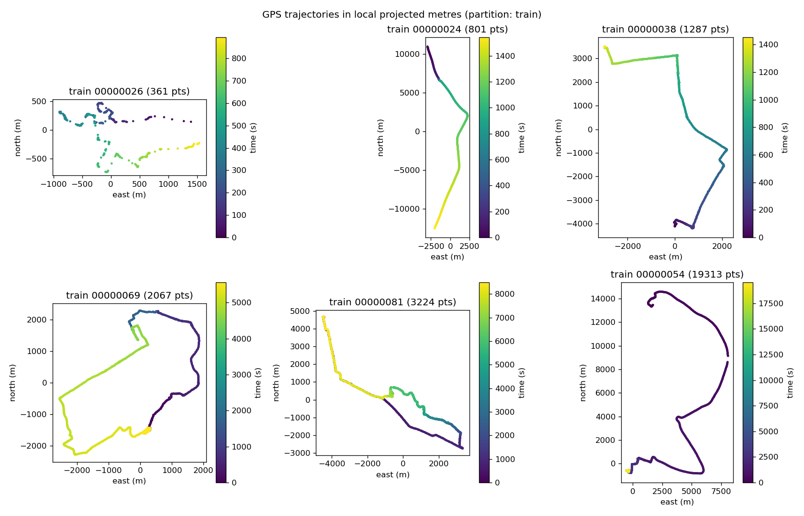
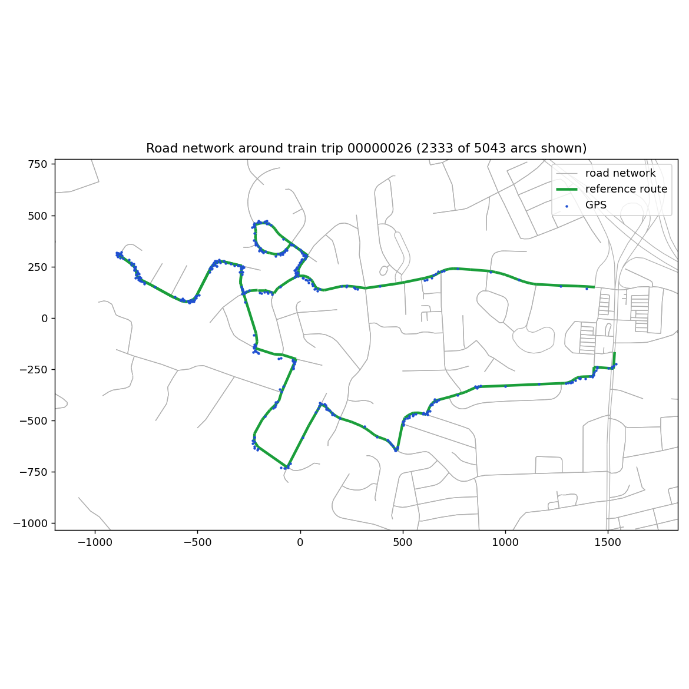
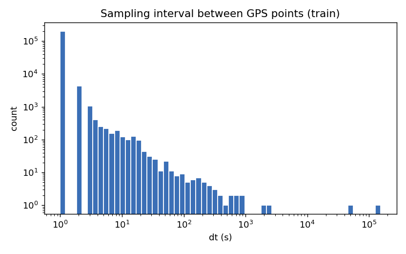
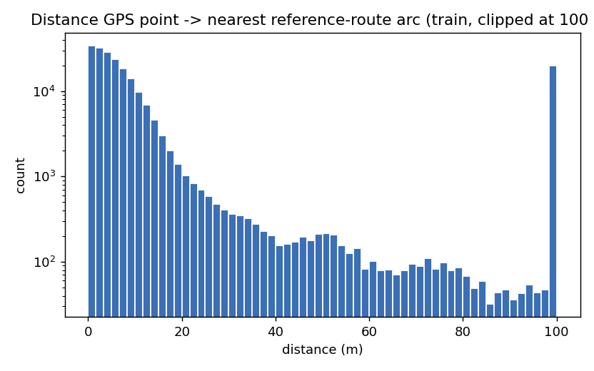
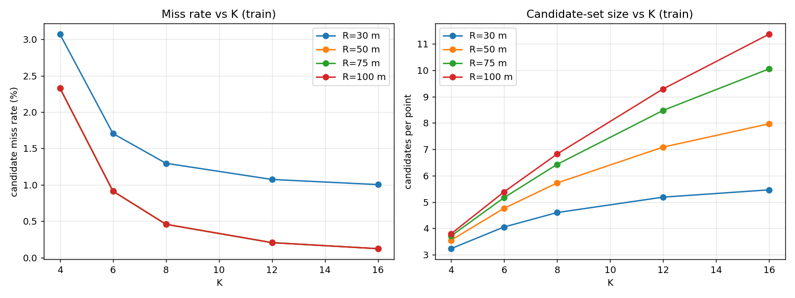
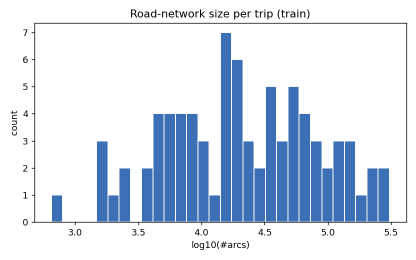
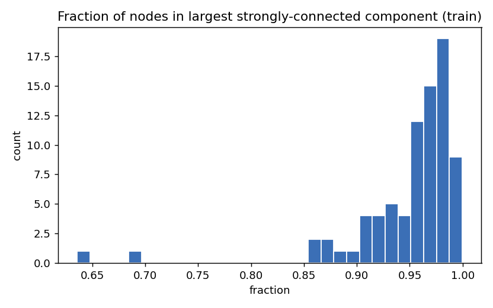
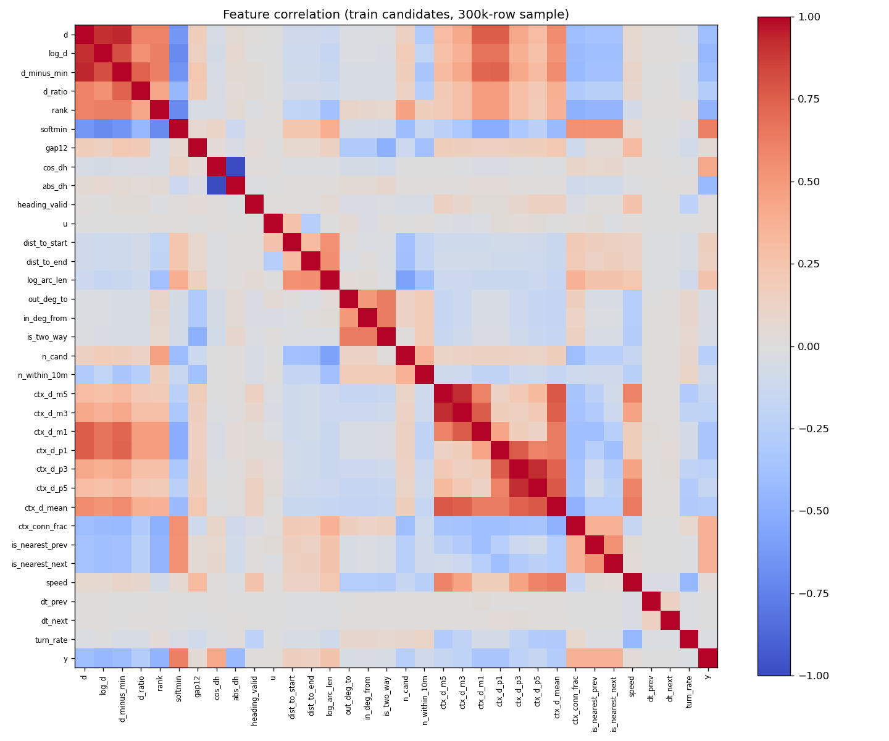
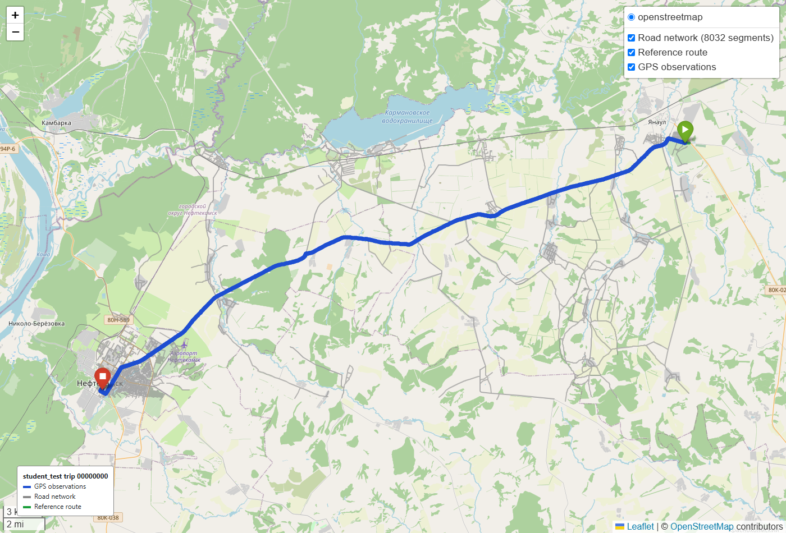
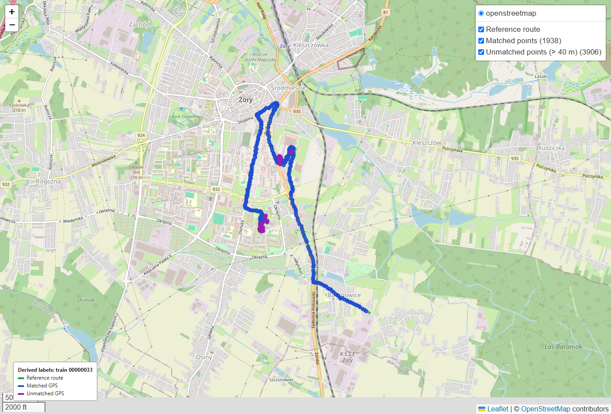
Script: scripts/03_train_compare.py; models defined in src/pathsnap/models.py. Task: binary classification of every (GPS point, candidate arc) row - is this the reference arc? For each GPS point the highest-probability candidate is the prediction. Protocol: 5-fold GroupKFold by trip on the 80 train trips (a trip never appears on both sides; fold assignment in results/models/folds.csv), then refit on all 80 trips and evaluation on the 10 student-test trips. Models are fit on rows of matched points only. Seed 42 everywhere.
Metrics. Top-1 accuracy (observation level): share of matched GPS points whose highest-scoring candidate is the reference arc - points whose reference arc is not among the candidates count as errors. Macro-F1, precision, recall, log loss: candidate-level binary metrics at threshold 0.5. Route continuity: share of consecutive changes of predicted arc where the second arc starts at the end node of the first. Primary selection metric: CV Top-1, because it is exactly the task (one arc per GPS point) and it is computed on trips the model never saw; log loss is the tie-breaker because the HMM consumes the probabilities.
| Model | Algorithm family | Key configuration | CV macro-F1 | CV Top-1 | ST Top-1 | Route continuity | ST macro-F1 | ST log loss | Inference ms/1k pts |
|---|---|---|---|---|---|---|---|---|---|
| LightGBM | Boosting | n_estimators=400; learning_rate=0.05; num_leaves=63; min_child_samples=50; subsample=0.8; subsample_freq=1; ... (full list in 3.2) | 0.9304 | 0.8889 | 0.8914 | 0.8120 | 0.9352 | 0.0834 | 22.0 |
| XGBoost | Boosting | n_estimators=400; learning_rate=0.05; max_depth=7; subsample=0.8; colsample_bytree=0.8; tree_method=hist | 0.9301 | 0.8879 | 0.8992 | 0.8125 | 0.9371 | 0.0823 | 5.7 |
| Random Forest | Ensemble (bagging) | n_estimators=150; min_samples_leaf=5; max_features=sqrt | 0.9305 | 0.8873 | 0.8868 | 0.7921 | 0.9326 | 0.0859 | 22.0 |
| HistGradientBoosting | Boosting | max_iter=300; learning_rate=0.1; max_leaf_nodes=31 | 0.9270 | 0.8821 | 0.8899 | 0.7705 | 0.9329 | 0.0973 | 17.2 |
| Multi-layer Perceptron | Neural network | hidden_layers=[128, 64]; activation=relu; alpha=0.0001; batch_size=512; lr=0.001; max_iter=60; ... (full list in 3.2) | 0.9219 | 0.8808 | 0.8916 | 0.8045 | 0.9295 | 0.0930 | 3.4 |
| Logistic Regression | Linear / probabilistic | C=1.0; penalty=l2; solver=lbfgs; scaling=StandardScaler | 0.9069 | 0.8683 | 0.8629 | 0.7239 | 0.9084 | 0.1326 | 2.2 |
| Baseline: distance + heading rule | Non-learned baseline | rule=score = -distance + 10 * cos(heading difference) | 0.9211 | 0.8676 | 0.8627 | 0.6917 | 0.9185 | N/A | 2.9 |
| K-Nearest Neighbours | Instance-based | n_neighbors=25; weights=distance; metric=euclidean; scaling=StandardScaler | 0.9098 | 0.8640 | 0.8622 | 0.7697 | 0.9134 | 0.1458 | 684.2 |
| Gaussian Naive Bayes | Linear / probabilistic (generative) | var_smoothing=1e-09 | 0.8084 | 0.8198 | 0.7966 | 0.7325 | 0.8059 | 1.0128 | 5.1 |
| Baseline: nearest arc | Non-learned baseline | rule=pick the nearest candidate arc (ties by arc id) | 0.7324 | 0.5553 | 0.5376 | 0.4142 | 0.7239 | N/A | 2.2 |
ST = student-test (10 trips); CV = 5-fold GroupKFold on the 80 train trips; inference in milliseconds per 1000 GPS points. N/A: the two baselines are deterministic rules without probabilities, so log loss is not defined. Route continuity here is measured on classifier-only predictions (before HMM decoding). Inference time = classifier prediction time on student-test, excluding candidate generation and features (identical for all models).
Additional metrics (student-test candidate level, positive class = reference arc; training time = refit on all train rows):
| Model | Precision | Recall | Candidate accuracy | Strict point accuracy | CV Top-1 std (5 folds) | CV log loss | Training time (s) |
|---|---|---|---|---|---|---|---|
| LightGBM | 0.9081 | 0.8748 | 0.9651 | 0.8895 | 0.0405 | 0.0936 | 17.7 |
| XGBoost | 0.9089 | 0.8803 | 0.9660 | 0.8973 | 0.0413 | 0.0937 | 20.6 |
| Random Forest | 0.9055 | 0.8688 | 0.9637 | 0.8849 | 0.0412 | 0.0951 | 94.3 |
| HistGradientBoosting | 0.8958 | 0.8794 | 0.9636 | 0.8880 | 0.0411 | 0.1093 | 14.8 |
| Multi-layer Perceptron | 0.9069 | 0.8574 | 0.9623 | 0.8897 | 0.0440 | 0.1184 | 203.5 |
| Logistic Regression | 0.8556 | 0.8377 | 0.9504 | 0.8610 | 0.0457 | 0.1429 | 6.1 |
| Baseline: distance + heading rule | 0.8627 | 0.8646 | 0.9554 | 0.8609 | 0.0410 | N/A | 0.0 |
| K-Nearest Neighbours | 0.8880 | 0.8225 | 0.9540 | 0.8603 | 0.0423 | 0.1625 | 0.1 |
| Gaussian Naive Bayes | 0.5604 | 0.9161 | 0.8688 | 0.7949 | 0.0667 | 1.0436 | 1.3 |
| Baseline: nearest arc | 0.5376 | 0.5388 | 0.8489 | 0.5365 | 0.0561 | N/A | 0.0 |
A. Model understanding
1. Why suitable: Leaf-wise gradient boosting with row and column sub-sampling: efficient on 1 M rows, models feature interactions and produces well-calibrated probabilities, which the HMM needs.
2. Strengths and limitations: Best CV Top-1 (0.889) and CV macro-F1 among boosters, fast training (18 s). Limitations: leaf-wise growth with 63 leaves can over-fit small data; inference (22 ms per 1000 points) was about 4x slower than XGBoost in our runs.
B. Training and configuration
5. Important hyperparameters (initial values): n_estimators = 400, learning_rate = 0.05, num_leaves = 63, min_child_samples = 50, subsample = 0.8, subsample_freq = 1, colsample_bytree = 0.8, reg_lambda = 1.0.
6. Loss / objective: Binary cross-entropy (log loss) with L2 regularisation (reg_lambda = 1), gradient-boosted with learning rate 0.05.
C. Experimental results
7. Student-test performance: Top-1 0.8914, strict accuracy 0.8895, route continuity 0.8120; CV Top-1 0.8889 +- 0.0405 over 5 folds; fit time on all train rows 17.7 s; inference 22.0 ms per 1000 GPS points.
8. Observation-level metrics (student-test): Top-1 accuracy 0.8914, macro-F1 0.9352 (precision 0.9081, recall 0.8748 for the positive class), log loss 0.0834.
9. Over- / under-fitting: Top-1 on 12 sampled training-fold trips 0.9521 vs held-out CV 0.8889 vs student-test 0.8914; log loss train 0.0472 vs CV 0.0936. Training-fold Top-1 0.952 vs CV 0.889 vs student-test 0.891. The real training history (Figure 15b) shows the student-test log loss flattening at about 0.085 after roughly 120 iterations while the training loss keeps falling to 0.06 - mild over-fitting in the later iterations, but the held-out loss never rises, so performance is not degraded.
A. Model understanding
1. Why suitable: Regularised gradient boosting with depth-limited trees and a histogram split finder: captures the non-linear interactions between distance, heading and neighbour context, regularises strongly, and is fast at inference.
2. Strengths and limitations: Best student-test Top-1 (0.899), macro-F1 (0.937) and log loss (0.082) and the fastest boosted model at inference (about 6 ms per 1000 points). Limitations: many interacting hyperparameters (depth, learning rate, regularisation, sampling), which motivates Bayesian optimisation; still a per-point model, so route continuity of raw predictions is only about 0.81.
B. Training and configuration
5. Important hyperparameters (initial values): n_estimators = 400, learning_rate = 0.05, max_depth = 7, subsample = 0.8, colsample_bytree = 0.8, tree_method = hist.
6. Loss / objective: Binary cross-entropy (logistic loss) plus L2 regularisation on leaf weights, optimised with second-order gradient boosting (learning rate 0.05, 400 trees, max depth 7).
C. Experimental results
7. Student-test performance: Top-1 0.8992, strict accuracy 0.8973, route continuity 0.8125; CV Top-1 0.8879 +- 0.0413 over 5 folds; fit time on all train rows 20.6 s; inference 5.7 ms per 1000 GPS points.
8. Observation-level metrics (student-test): Top-1 accuracy 0.8992, macro-F1 0.9371 (precision 0.9089, recall 0.8803 for the positive class), log loss 0.0823.
9. Over- / under-fitting: Top-1 on 12 sampled training-fold trips 0.9504 vs held-out CV 0.8879 vs student-test 0.8992; log loss train 0.0486 vs CV 0.0937. Training-fold Top-1 0.950 vs CV 0.888 vs student-test 0.899. The per-iteration history (Figure 15a) shows the student-test log loss plateauing at about 0.083 after roughly 150 iterations while the training loss keeps decreasing (0.063 at 400), so the later trees mostly fit the training trips (mild over-fitting); the held-out loss never increases, and CV and student-test agree within 1 pp, so generalisation is not harmed. The number of trees and the regularisation strength are therefore natural targets for tuning.
A. Model understanding
1. Why suitable: Bagged decision trees capture non-linear interactions (for example heading only matters when the vehicle moves) without feature scaling, and averaging many trees reduces variance.
2. Strengths and limitations: Strong accuracy (CV Top-1 0.887), robust to outliers and correlated features, little tuning needed. Limitations: largest model and slowest to train among the ensembles (94 s for 150 trees), inference 22 ms per 1000 points, and deep trees memorise training trips.
B. Training and configuration
5. Important hyperparameters (initial values): n_estimators = 150, min_samples_leaf = 5, max_features = sqrt.
6. Loss / objective: Each tree greedily minimises Gini impurity; probabilities are the average of leaf class frequencies over 150 bootstrap trees.
C. Experimental results
7. Student-test performance: Top-1 0.8868, strict accuracy 0.8849, route continuity 0.7921; CV Top-1 0.8873 +- 0.0412 over 5 folds; fit time on all train rows 94.3 s; inference 22.0 ms per 1000 GPS points.
8. Observation-level metrics (student-test): Top-1 accuracy 0.8868, macro-F1 0.9326 (precision 0.9055, recall 0.8688 for the positive class), log loss 0.0859.
9. Over- / under-fitting: Top-1 on 12 sampled training-fold trips 0.9722 vs held-out CV 0.8873 vs student-test 0.8868; log loss train 0.0399 vs CV 0.0951. Highest variance of all models: Top-1 0.972 on training-fold trips vs 0.887 held out (8.5 pp gap) and log loss 0.040 vs 0.095 - the trees fit the training trips almost perfectly. Bagging keeps the held-out score high, so this is benign over-fitting rather than harmful, but it is why boosting with shallower trees generalises slightly better.
A. Model understanding
1. Why suitable: Gradient boosting builds an additive model of shallow trees, each correcting the previous errors - a strong default for tabular data with mixed-scale features; the histogram implementation keeps training fast on a million rows.
2. Strengths and limitations: Good accuracy (student-test Top-1 0.890) at a moderate cost (15 s fit). Limitations: with 300 iterations at learning rate 0.1 and no early stopping its probabilities are less well calibrated than XGBoost/LightGBM (log loss 0.097 vs 0.082) and continuity of its raw predictions is lowest among the boosters.
B. Training and configuration
5. Important hyperparameters (initial values): max_iter = 300, learning_rate = 0.1, max_leaf_nodes = 31.
6. Loss / objective: Binary cross-entropy (log loss) minimised by gradient boosting with second-order (Newton) leaf values.
C. Experimental results
7. Student-test performance: Top-1 0.8899, strict accuracy 0.8880, route continuity 0.7705; CV Top-1 0.8821 +- 0.0411 over 5 folds; fit time on all train rows 14.8 s; inference 17.2 ms per 1000 GPS points.
8. Observation-level metrics (student-test): Top-1 accuracy 0.8899, macro-F1 0.9329 (precision 0.8958, recall 0.8794 for the positive class), log loss 0.0973.
9. Over- / under-fitting: Top-1 on 12 sampled training-fold trips 0.9348 vs held-out CV 0.8821 vs student-test 0.8899; log loss train 0.0606 vs CV 0.1093. Training-fold Top-1 0.935 vs CV 0.882 vs student-test 0.890: moderate, expected gap; student-test is in line with CV, so no harmful over-fitting.
A. Model understanding
1. Why suitable: A feed-forward neural network can learn arbitrary non-linear combinations of the features and gives smooth probabilities; it represents the neural-network family.
2. Strengths and limitations: Competitive student-test Top-1 (0.892) and very fast inference (3 ms per 1000 points). Limitations: slowest to train (about 200 s on 80 000 observations with early stopping), sensitive to scaling and initialisation, and higher fold variability (std 0.044) than the boosters.
B. Training and configuration
5. Important hyperparameters (initial values): hidden_layers = [128, 64], activation = relu, alpha = 0.0001, batch_size = 512, lr = 0.001, max_iter = 60, early_stopping = True. fit on 80k observations (~450k rows) to keep epoch time manageable.
6. Loss / objective: Binary cross-entropy minimised by Adam (learning rate 0.001, batch 512, L2 alpha 1e-4), early stopping on a 10 % validation split (patience 6 epochs).
C. Experimental results
7. Student-test performance: Top-1 0.8916, strict accuracy 0.8897, route continuity 0.8045; CV Top-1 0.8808 +- 0.0440 over 5 folds; fit time on all train rows 203.5 s; inference 3.4 ms per 1000 GPS points.
8. Observation-level metrics (student-test): Top-1 accuracy 0.8916, macro-F1 0.9295 (precision 0.9069, recall 0.8574 for the positive class), log loss 0.0930.
9. Over- / under-fitting: Top-1 on 12 sampled training-fold trips 0.9169 vs held-out CV 0.8808 vs student-test 0.8916; log loss train 0.0786 vs CV 0.1184. Training-fold Top-1 0.917 vs CV 0.881 vs student-test 0.892. sklearn's built-in history (Figure 15c) only records validation accuracy on a random 10 % of rows, so we additionally trained the same network epoch by epoch on a trip-grouped split (scripts/03b_mlp_loss_curve.py, Figure 15d: 64 training trips vs 16 held-out trips): the held-out log loss stops improving after epoch 8 (best 0.112) and then fluctuates between 0.113 and 0.119 while the training loss keeps falling from 0.083 to 0.078 - a clear sign of over-fitting beyond about 8 epochs, which early stopping on the held-out loss prevents. The remaining gap to boosting is due to the sub-sampled training set and the higher variance of the network.
A. Model understanding
1. Why suitable: A linear, well-calibrated probabilistic baseline: the strongest signals (distance, heading agreement, neighbour agreement) are roughly monotonic, so a linear decision function on standardised features should already separate most candidates, and its probabilities feed the HMM directly.
2. Strengths and limitations: Fast to train (about 6 s on all 1.08 M training rows) and predict, stable across folds, interpretable coefficients, reasonable calibration (log loss 0.13). Limitation: it cannot model interactions such as distance mattering differently when heading is unreliable or when many candidates are close; it ends at the level of the hand-made distance+heading rule (CV Top-1 0.868 vs 0.868).
B. Training and configuration
5. Important hyperparameters (initial values): C = 1.0, penalty = l2, solver = lbfgs, scaling = StandardScaler.
6. Loss / objective: Binary cross-entropy (log loss) with L2 regularisation, minimised by L-BFGS; StandardScaler fitted inside the pipeline on training folds only.
C. Experimental results
7. Student-test performance: Top-1 0.8629, strict accuracy 0.8610, route continuity 0.7239; CV Top-1 0.8683 +- 0.0457 over 5 folds; fit time on all train rows 6.1 s; inference 2.2 ms per 1000 GPS points.
8. Observation-level metrics (student-test): Top-1 accuracy 0.8629, macro-F1 0.9084 (precision 0.8556, recall 0.8377 for the positive class), log loss 0.1326.
9. Over- / under-fitting: Top-1 on 12 sampled training-fold trips 0.8855 vs held-out CV 0.8683 vs student-test 0.8629; log loss train 0.1250 vs CV 0.1429. The gap between training-fold and held-out Top-1 is small (about 1.7 pp) and student-test agrees with CV, so there is no over-fitting; the model is limited by bias (under-fitting): even on training trips it stays far below the tree ensembles (0.886 vs 0.95).
A. Model understanding
1. Why suitable: An instance-based method: if a (point, candidate) pair looks like stored training pairs in feature space, it should share their label; no parametric form is assumed.
2. Strengths and limitations: Non-parametric and simple; distance weighting gives smooth probabilities. Limitations: prediction cost grows with the stored reference set (684 ms per 1000 GPS points, about 120x slower than XGBoost), so the reference set had to be sub-sampled to 20 000 observations; all 33 standardised features weigh equally in the Euclidean distance although only a few are informative.
B. Training and configuration
5. Important hyperparameters (initial values): n_neighbors = 25, weights = distance, metric = euclidean, scaling = StandardScaler. fit on 20k observations (~115k rows): prediction cost grows with the reference set.
6. Loss / objective: No training loss: the 25 nearest stored rows (Euclidean distance on standardised features) vote with weights 1/distance.
C. Experimental results
7. Student-test performance: Top-1 0.8622, strict accuracy 0.8603, route continuity 0.7697; CV Top-1 0.8640 +- 0.0423 over 5 folds; fit time on all train rows 0.1 s; inference 684.2 ms per 1000 GPS points.
8. Observation-level metrics (student-test): Top-1 accuracy 0.8622, macro-F1 0.9134 (precision 0.8880, recall 0.8225 for the positive class), log loss 0.1458.
9. Over- / under-fitting: Top-1 on 12 sampled training-fold trips 0.8909 vs held-out CV 0.8640 vs student-test 0.8622; log loss train 0.1149 vs CV 0.1625. Training-fold Top-1 0.891 vs CV 0.864 vs student-test 0.862: a modest gap and no over-fitting thanks to k = 25 and distance weighting, but the model under-fits relative to the tree ensembles because of the sub-sampled reference set and the uninformative dimensions diluting the metric.
A. Model understanding
1. Why suitable: The simplest generative probabilistic model, included to test whether per-class feature distributions alone are enough and as an extremely cheap scorer.
2. Strengths and limitations: Trains in about one second and predicts quickly. Limitation: the conditional-independence assumption is badly violated - d, log_d, d_minus_min, rank and the context distances all encode the same information - so evidence is counted many times, making probabilities over-confident and the decision threshold biased.
B. Training and configuration
5. Important hyperparameters (initial values): var_smoothing = 1e-09.
6. Loss / objective: Maximum-likelihood estimation of per-class Gaussian means and variances (no iterative loss); predictions via Bayes rule.
C. Experimental results
7. Student-test performance: Top-1 0.7966, strict accuracy 0.7949, route continuity 0.7325; CV Top-1 0.8198 +- 0.0667 over 5 folds; fit time on all train rows 1.3 s; inference 5.1 ms per 1000 GPS points.
8. Observation-level metrics (student-test): Top-1 accuracy 0.7966, macro-F1 0.8059 (precision 0.5604, recall 0.9161 for the positive class), log loss 1.0128.
9. Over- / under-fitting: Top-1 on 12 sampled training-fold trips 0.8388 vs held-out CV 0.8198 vs student-test 0.7966; log loss train 0.8962 vs CV 1.0436. Clear under-fitting: training-fold Top-1 is only 0.839 and log loss is about 0.90 even on training trips. Precision on the positive class is only 0.56 with recall 0.92 - the model flags far too many candidates as correct - and fold variability is the highest of all models (std 0.067).
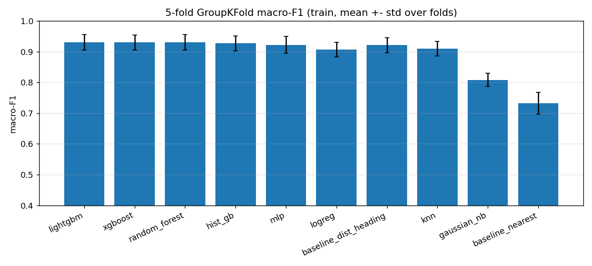
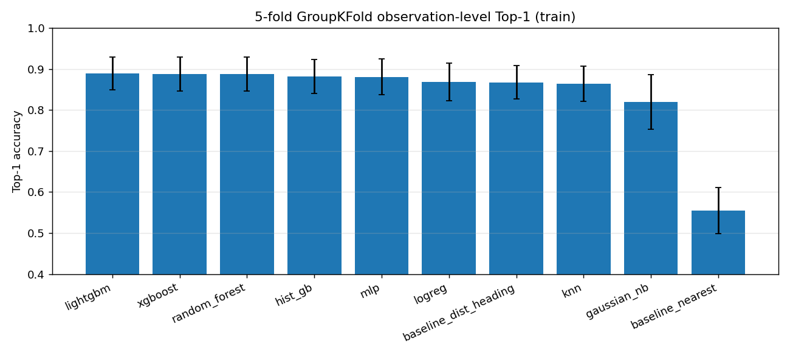
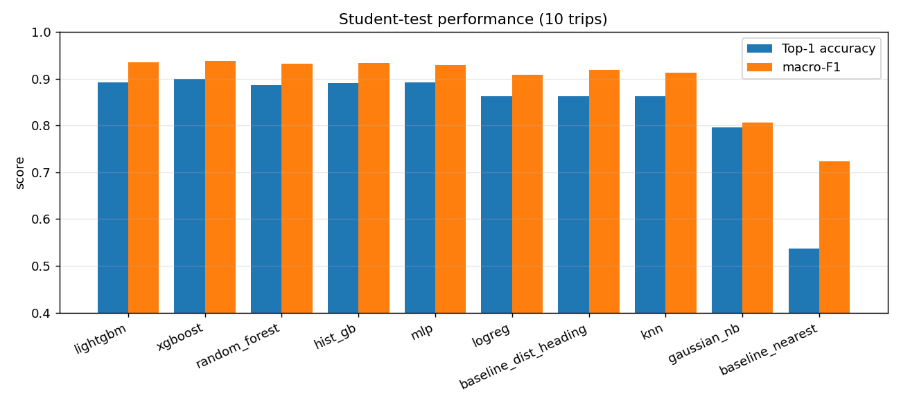
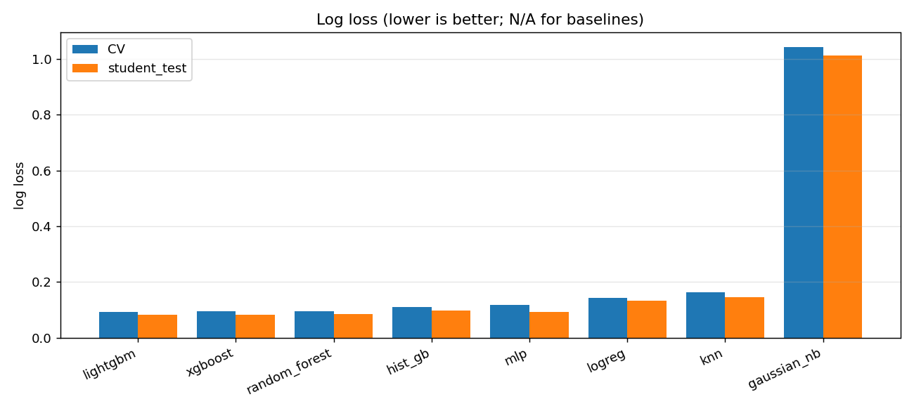
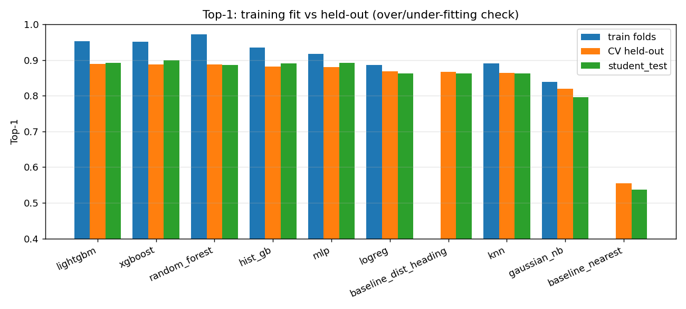
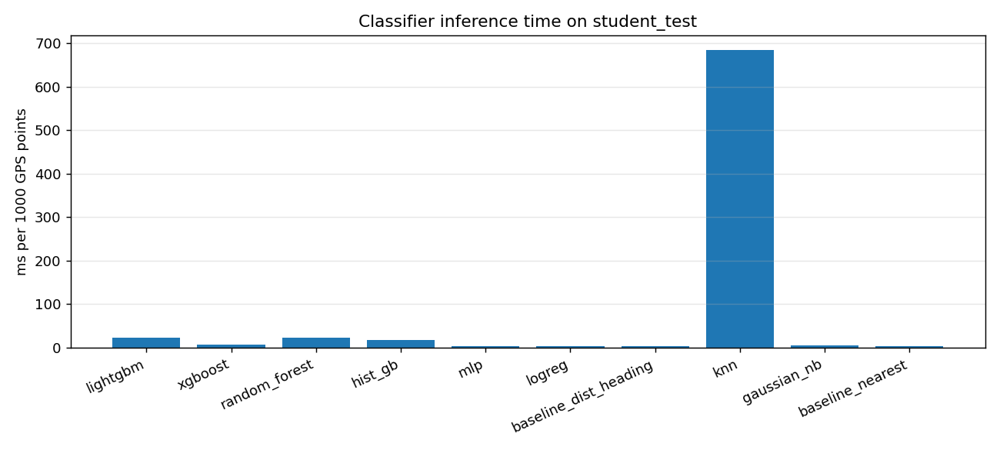
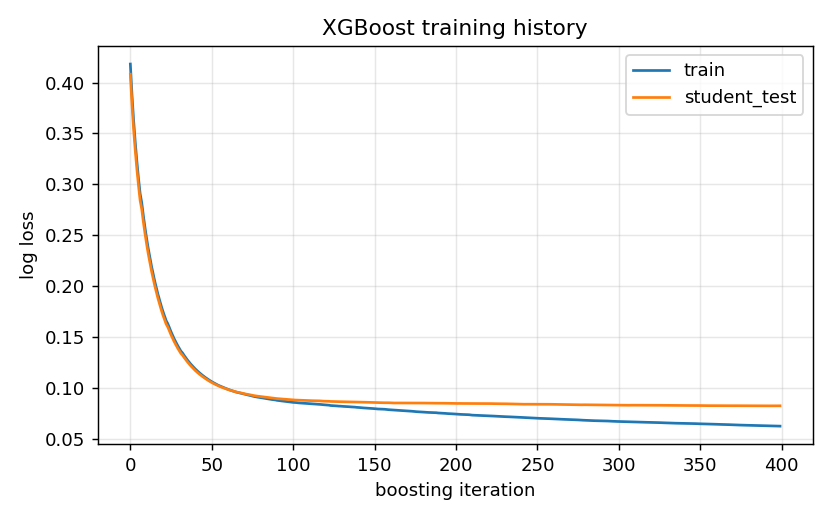
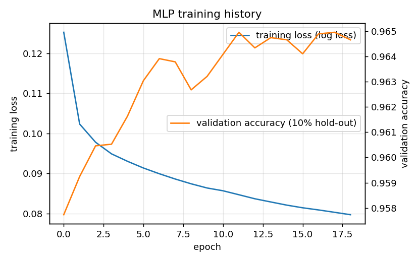
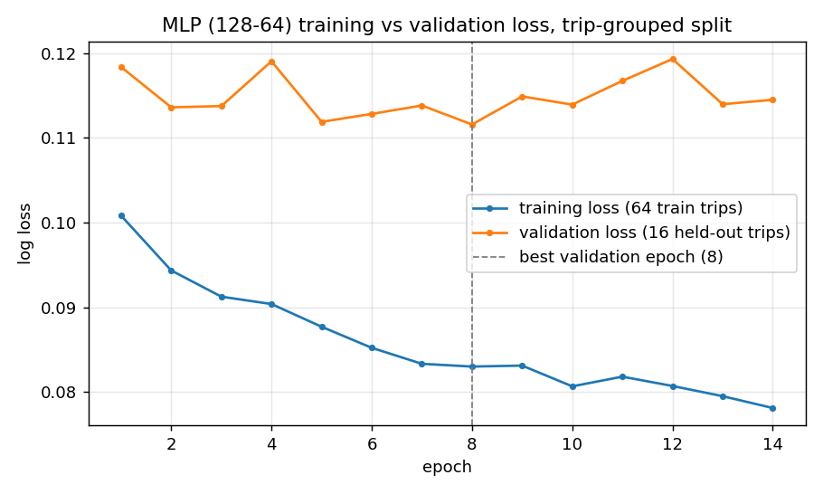
Only XGBoost, LightGBM (boosting iterations) and the MLP (epochs) produce real training histories, so only they have training curves. For the boosting curves the student-test trips were passed as an evaluation set purely to record the loss per iteration - they were not used for early stopping or any other decision. Confusion matrices for every model are in results/models/<model>/confusion_matrix.png; two examples:
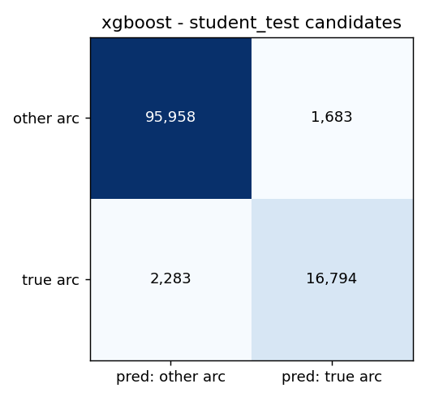
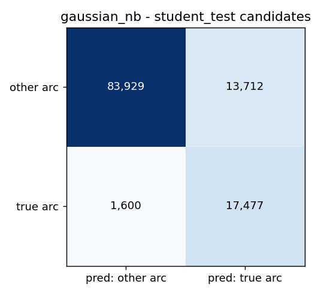
XGBoost and LightGBM are tied on the primary metric (CV Top-1 0.888 vs 0.889, well within the fold standard deviation of about 0.04, which reflects how hard individual trips are rather than model differences). XGBoost was selected because (a) it is best on every student-test metric - Top-1 0.899, macro-F1 0.937, log loss 0.082 - so its probabilities are the best input for the HMM, (b) it was about 4x faster at inference than LightGBM, which matters for the API, (c) its training history shows no harmful over-fitting. Random Forest has similar accuracy but over-fits the training trips the most and is slower; logistic regression, KNN and Gaussian NB are clearly worse; the MLP is competitive but less stable across folds and much slower to train. All learned ensembles beat the hand-made distance+heading rule by 2-4 pp of Top-1, and every model beats the nearest-arc baseline by more than 25 pp.
Script: scripts/04_bayes_opt.py; full trial record in results/optuna/trials.csv and study.db (Optuna SQLite).
1. Hyperparameters searched and 2. ranges:
| hyperparameter | range / distribution |
|---|---|
| n_estimators | int [150, 900] step 50 |
| learning_rate | float [0.01, 0.3] log |
| max_depth | int [3, 11] |
| min_child_weight | float [1, 50] log |
| subsample | float [0.5, 1.0] |
| colsample_bytree | float [0.4, 1.0] |
| gamma | float [0, 5] |
| reg_alpha | float [1e-8, 10] log |
| reg_lambda | float [1e-3, 20] log |
| scale_pos_weight | float [1, 6] |
3. Objective: mean 5-fold GroupKFold observation-level Top-1 on 80 train trips (same folds as Phase 3; student-test never used inside the search). Sampler TPE(seed=42, n_startup_trials=10); pruner MedianPruner(n_startup_trials=8, n_warmup_steps=1) - a trial is stopped after a fold if its running mean is below the median of earlier trials at the same fold. The first trial was the untuned configuration, so the search starts from the baseline.
4. Trials: 30 (23 completed, 7 pruned); search wall time 95.1 min on a 22-thread laptop CPU.
5. Best hyperparameters: n_estimators = 800, learning_rate = 0.03278, max_depth = 11, min_child_weight = 4.459, subsample = 0.7786, colsample_bytree = 0.9803, gamma = 0.9443, reg_alpha = 9.11e-06, reg_lambda = 0.00202, scale_pos_weight = 2.31 (CV Top-1 0.8907).
| number | value | colsample_bytree | gamma | learning_rate | max_depth | min_child_weight | n_estimators | reg_alpha | reg_lambda | scale_pos_weight | subsample |
|---|---|---|---|---|---|---|---|---|---|---|---|
| 26 | 0.8907 | 0.9803 | 0.9443 | 0.03278 | 11 | 4.459 | 800 | 9.11e-06 | 0.00202 | 2.31 | 0.7786 |
| 25 | 0.8903 | 0.7895 | 1.21 | 0.02764 | 11 | 5.19 | 900 | 2.415e-06 | 0.006616 | 3.886 | 0.8255 |
| 24 | 0.8903 | 0.7334 | 0.8846 | 0.04159 | 11 | 4.851 | 800 | 2.667e-08 | 0.005182 | 4.159 | 0.8546 |
| 20 | 0.8903 | 0.8686 | 1.287 | 0.0306 | 11 | 4.89 | 900 | 7.601e-06 | 0.001529 | 3.381 | 0.8191 |
| 19 | 0.8900 | 0.9493 | 0.3763 | 0.03323 | 11 | 17.76 | 750 | 0.001395 | 0.005813 | 4.335 | 0.801 |
6. Tuned vs untuned (same metrics, same partitions):
| model | cv_top1 | cv_macro_f1 | cv_log_loss | st_top1 | st_macro_f1 | st_log_loss | st_route_continuity | fit_time_s | inference_ms_per_1k_points |
|---|---|---|---|---|---|---|---|---|---|
| XGBoost untuned | 0.8879 | 0.9301 | 0.0937 | 0.8992 | 0.9371 | 0.0823 | 0.8125 | 20.6 | 5.7 |
| XGBoost tuned (Optuna) | 0.8907 | 0.9312 | 0.1002 | 0.8944 | 0.9340 | 0.0872 | 0.8140 | 49.7 | 25.9 |
Did the tuned model outperform the untuned one? On the optimised objective, yes, but only slightly: CV Top-1 rose from 0.8879 to 0.8907 (+0.28 pp) and CV macro-F1 from 0.9301 to 0.9312. All 23 completed trials lie between 0.881 and 0.891 (std 0.0025), i.e. XGBoost is not very sensitive to its hyperparameters on this data - the features carry most of the signal - and the gain is smaller than the fold-to-fold standard deviation (about 0.037). As a stand-alone classifier the tuned model was not better on student-test: Top-1 0.8944 vs 0.8992, log loss 0.087 vs 0.082 (CV log loss also worse, 0.100 vs 0.094), and inference is about 4.5x slower (800 trees of depth 11 vs 400 of depth 7). The main reason is scale_pos_weight = 2.31: up-weighting the positive class optimises the ranking used by Top-1 but shifts probabilities upwards, which costs calibration (log loss). Because the deployed system is classifier + HMM, we decided between the two models with a leakage-free test on the training data: the HMM decoder was tuned and evaluated on the out-of-fold probabilities of each model (scripts/05_hmm_eval.py, untuned results kept in results/hmm_untuned/). Train-OOF Top-1 after HMM was 0.9361 (tuned) vs 0.9360 (untuned) - a tie, slightly in favour of the tuned model - and on student-test the tuned model + HMM reached 0.9513 vs 0.9383. The tuned model's less extreme probabilities on wrong-but-close candidates give the decoder more room to correct them, so the tuned XGBoost is the deployed model. Evaluator data was never used for any of these decisions. Computational cost: 30 trials in 95 min of wall time on a 22-thread laptop CPU (median-pruning stopped 7 unpromising trials early); refitting the tuned model on all train rows takes 50 s.
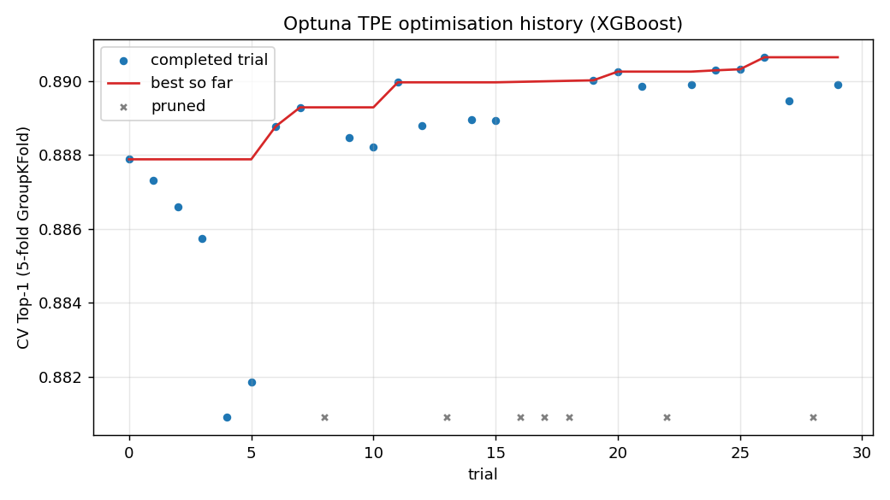
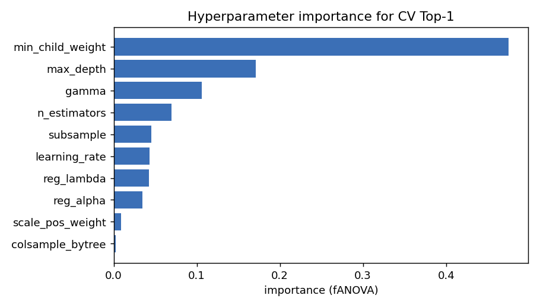
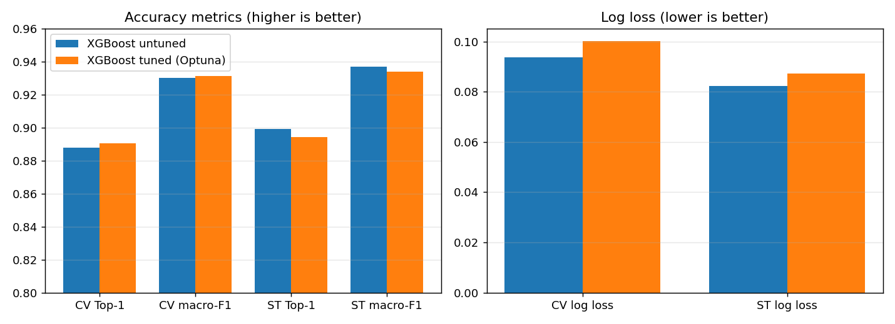
Code: src/pathsnap/hmm.py, src/pathsnap/routing.py; experiment: scripts/05_hmm_eval.py.
1. Hidden states. At GPS observation t the hidden state is one of its candidate arcs (at most 8 within 50 m, plus ties), stored together with the projection of the GPS point on that arc (fractional position u). Rows of the candidate table are kept in the same order as the classifier input, so every state maps one-to-one to an arc id and a classifier probability (candidate-to-road-segment correspondence is preserved).
2. Emission probabilities. log P(o_t | c) = w_e * log p_c, where p_c is the selected classifier's probability that c is the true arc, re-normalised over the candidates of observation t (floor 1e-6). Because the classifier already uses distance, heading and context, it acts as a learned emission model; w_e balances emission against transition evidence.
3. Transition probabilities. Following Newson and Krumm, a correct transition is one where the distance driven along the network between the two projected positions is close to the straight-line distance between the two GPS fixes: log P(a -> b) = -(|d_net - d_gc| + U-turn penalty) / beta. d_net is computed exactly: same arc forward = (u_b - u_a) x length; different arcs = rest of arc a + shortest path from the end node of a to the start node of b (bounded Dijkstra, limit max(250 m, 3 d_gc + 50 m)) + the part of b before the projection. Moving onto the reverse twin or backwards on the same arc adds uturn_m metres. Unreachable pairs get probability zero.
Viterbi recurrence. delta_t(b) = log P(o_t | b) + max_a [ delta_{t-1}(a) + log P(a -> b) ], with back-pointers psi_t(b) = argmax_a. The recurrence is vectorised as a (k_{t-1} x k_t) matrix per step in log space; the best final state is traced back through psi. Network distances are pre-computed once per trip (cached Dijkstra per source node), so decoding with other parameters is cheap.
4. Missing candidates and large GPS gaps. A point without candidates (no arc within 200 m after radius expansion) gets no state: the current chain is decoded and closed, the point is left unassigned (counted as an error in strict accuracy) and a new chain starts at the next point. If the time gap to the previous fix exceeds gap_s, the chain is also broken and restarted from the emission probabilities, because the network distance between fixes far apart in time is not informative.
5. Disconnected road segments. If every transition from the previous observation is impossible (no path within the search limit - e.g. disconnected network components or a GPS jump), the current chain is decoded up to t-1 and a new chain starts at t, so decoding never fails. When the decoded arcs of consecutive points are not directly adjacent, the route-stitching step inserts the shortest connecting path (up to 3 km); if none exists the gap is counted as unbridged.
Decoder tuning. Grid over beta in [3, 5, 8, 12, 20, 40], uturn_m in [0, 25, 75, 200], w_e in [0.5, 1.0, 2.0], gap_s in [30, 60, 120] (216 combinations), objective pooled Top-1 on matched points, train OOF probabilities. Best: beta = 3, uturn_m = 25, w_e = 0.5, gap_s = 60 (train OOF Top-1 0.9361). Defaults before tuning: beta = 10.0, uturn_m = 50.0, gap_s = 60.0, w_e = 1.0.
| beta | uturn_m | w_e | gap_s | train_oof_top1 |
|---|---|---|---|---|
| 3 | 25 | 0.5 | 60 | 0.9361 |
| 5 | 25 | 0.5 | 60 | 0.9361 |
| 3 | 25 | 0.5 | 120 | 0.9357 |
| 5 | 25 | 0.5 | 120 | 0.9357 |
| 3 | 25 | 1.0 | 60 | 0.9356 |
| 5 | 25 | 0.5 | 30 | 0.9356 |
| 3 | 25 | 0.5 | 30 | 0.9356 |
| 3 | 25 | 1.0 | 120 | 0.9353 |
6. Did HMM decoding improve the route? Classifier-only vs classifier + HMM (train = out-of-fold probabilities, student_test = model refit on all train trips):
| partition | method | top1 | strict_accuracy | direct_continuity | plausible_continuity | chain_breaks | unbridged_gaps | route_precision_mean | route_recall_mean | route_f1_mean | route_len_f1_mean | trips_fully_continuous | decode_ms_per_1k_points |
|---|---|---|---|---|---|---|---|---|---|---|---|---|---|
| student_test | classifier_only | 0.8944 | 0.8925 | 0.8140 | 0.8266 | 0 | 72 | 0.6895 | 0.9928 | 0.8066 | 0.8701 | 0.7000 | 0.0000 |
| student_test | hmm_default | 0.9369 | 0.9349 | 0.8814 | 0.9905 | 6 | 3 | 0.9148 | 0.9930 | 0.9508 | 0.9697 | 0.8000 | 34.4968 |
| student_test | hmm_tuned | 0.9513 | 0.9492 | 0.8900 | 0.9938 | 6 | 3 | 0.9270 | 0.9918 | 0.9570 | 0.9735 | 0.8000 | 36.6736 |
| train | classifier_only | 0.8896 | 0.7867 | 0.8151 | 0.7518 | 0 | 1015 | 0.6783 | 0.9858 | 0.7824 | 0.8403 | 0.5000 | 0.0000 |
| train | hmm_default | 0.9286 | 0.8212 | 0.8687 | 0.9761 | 516 | 63 | 0.8749 | 0.9868 | 0.9205 | 0.9544 | 0.8500 | 68.6091 |
| train | hmm_tuned | 0.9361 | 0.8279 | 0.8670 | 0.9798 | 516 | 64 | 0.8817 | 0.9871 | 0.9248 | 0.9581 | 0.8500 | 60.5738 |
Definitions: direct continuity = consecutive different arcs physically adjacent; plausible continuity = the second arc is reachable from the first within 2 x GPS displacement + 50 m of driving; route P/R/F1 = overlap between the arcs of the stitched predicted route and the reference route (mean over trips), also length-weighted; unbridged gaps = places where stitching found no path within 3 km.
Effect of HMM decoding. With the tuned classifier, HMM/Viterbi raised student-test Top-1 from 0.8944 to 0.9513 (+5.7 pp) and train-OOF Top-1 from 0.8896 to 0.9361 (+4.7 pp). Route quality improves even more: plausible continuity rises from 0.83 to 0.99 (student-test) and from 0.75 to 0.98 (train), the number of unbridged gaps in the stitched route drops from 72 to 3 (student-test) and from 1015 to 64 (train), and route F1 rises from 0.81 to 0.96 because the classifier-only route contains many spurious arcs (route precision 0.69 -> 0.93) while recall was already high. Tuning the decoder on train-OOF probabilities gave beta = 3 m, U-turn penalty 25 m, emission weight 0.5 and gap threshold 60 s; it adds 1.4 pp over the hand-picked defaults on student-test (0.9369 -> 0.9513) and 0.75 pp on train OOF. The best settings use a small beta and an emission weight below 1, i.e. the network-distance evidence should dominate the per-point classifier when they disagree. Direct continuity stays at 0.89 because consecutive 1 Hz points often skip very short arcs (the next arc is reached through an intermediate one); these gaps are legitimate and are filled by stitching. Where HMM did not help. On 9 of 10 student-test trips the HMM improved Top-1 (largest gain +16.9 pp on trip 00000077). It hurt trip 00000065 (-3.5 pp): the errors concentrate on a divided road whose two one-way carriageways run a few metres apart (Section 6) - once the chain enters the wrong carriageway, connectivity keeps it there for the whole stretch. On train the clearest failure is trip 00000010 (Top-1 0.683 -> 0.551): it is slow (median 8.4 m/s, 12.9 GPS points per route arc), has an unusually high share of one-way arcs (two-way fraction 0.82 vs a median of 0.95) and the classifier alone was already poor (route F1 0.37). The HMM enforced a consistent route that partly followed the wrong parallel road - Top-1 fell but route F1 still improved from 0.37 to 0.69. Gaps and disconnections are handled gracefully: 6 chain breaks on student-test (time gaps above 60 s or no feasible transition) and 516 on train (mostly the long gaps and partial-route trips found in the EDA).
Per-trip change in Top-1 (HMM tuned - classifier-only), student-test:
| trip_id | classifier_only | hmm_default | hmm_tuned | delta |
|---|---|---|---|---|
| 00000065 | 0.9128 | 0.8893 | 0.8776 | -0.0352 |
| 00000052 | 0.9771 | 0.9924 | 0.9885 | 0.0115 |
| 00000007 | 0.9860 | 0.9948 | 0.9978 | 0.0118 |
| 00000000 | 0.9596 | 0.9708 | 0.9728 | 0.0132 |
| 00000009 | 0.8800 | 0.9069 | 0.9031 | 0.0230 |
| 00000091 | 0.9096 | 0.9451 | 0.9371 | 0.0275 |
| 00000040 | 0.9472 | 0.9763 | 0.9823 | 0.0351 |
| 00000056 | 0.9183 | 0.9664 | 0.9631 | 0.0448 |
| 00000076 | 0.9213 | 0.9630 | 0.9697 | 0.0485 |
| 00000077 | 0.7377 | 0.8371 | 0.9067 | 0.1690 |
Train trips where HMM helped least (OOF):
| trip_id | classifier_only | hmm_default | hmm_tuned | delta |
|---|---|---|---|---|
| 00000010 | 0.6831 | 0.5168 | 0.5515 | -0.1317 |
| 00000079 | 0.9507 | 0.9274 | 0.9274 | -0.0232 |
| 00000018 | 0.9551 | 0.9340 | 0.9367 | -0.0185 |
| 00000001 | 0.9840 | 0.9772 | 0.9772 | -0.0068 |
| 00000037 | 0.9867 | 0.9897 | 0.9838 | -0.0030 |
| 00000005 | 0.9732 | 0.9732 | 0.9722 | -0.0010 |
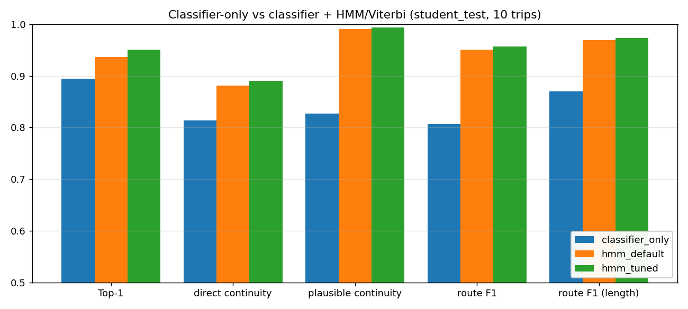
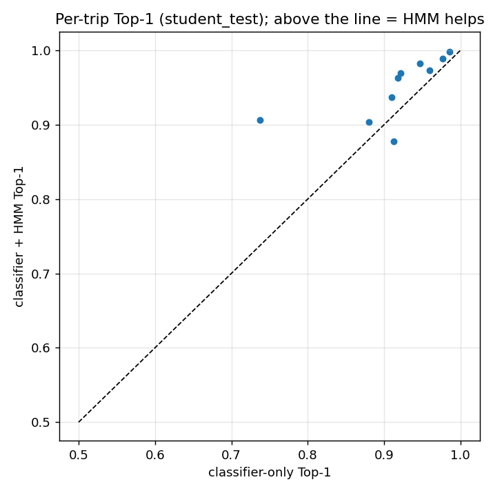
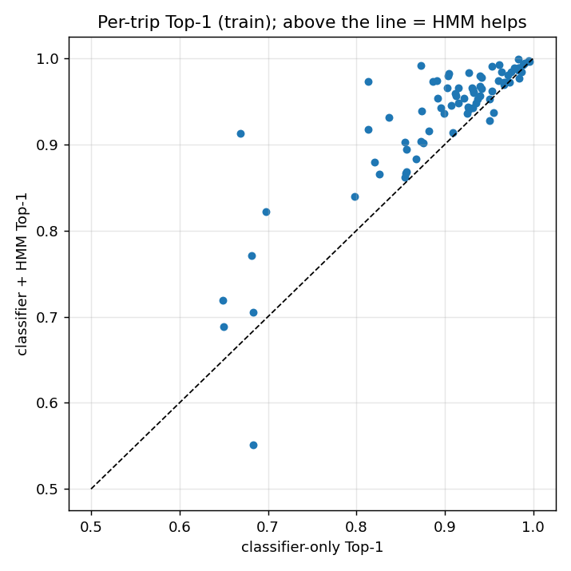
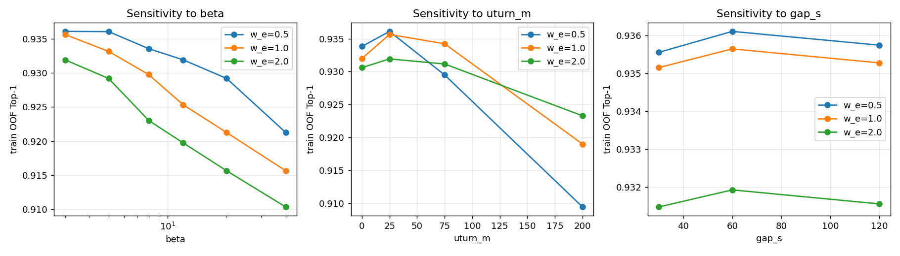
Script: scripts/07_make_maps.py (map code in src/pathsnap/viz.py); interactive HTML maps in results/maps/. Each map has toggleable layers (LayerControl) and a legend: road network (grey), reference route (green, wide translucent), classifier-only arcs (orange, hidden by default), predicted HMM route (red), GPS observations (blue, start/end markers) and GPS points whose HMM arc differs from the reference (purple). The extent is fitted to the trip.
| which | trip_id | top1 | route_f1 | wrong_points | html |
|---|---|---|---|---|---|
| worst | 00000065 | 0.8776 | 0.8869 | 94 | result_00000065.html |
| median | 00000076 | 0.9697 | 0.9379 | 45 | result_00000076.html |
| best | 00000007 | 0.9978 | 0.9918 | 3 | result_00000007.html |
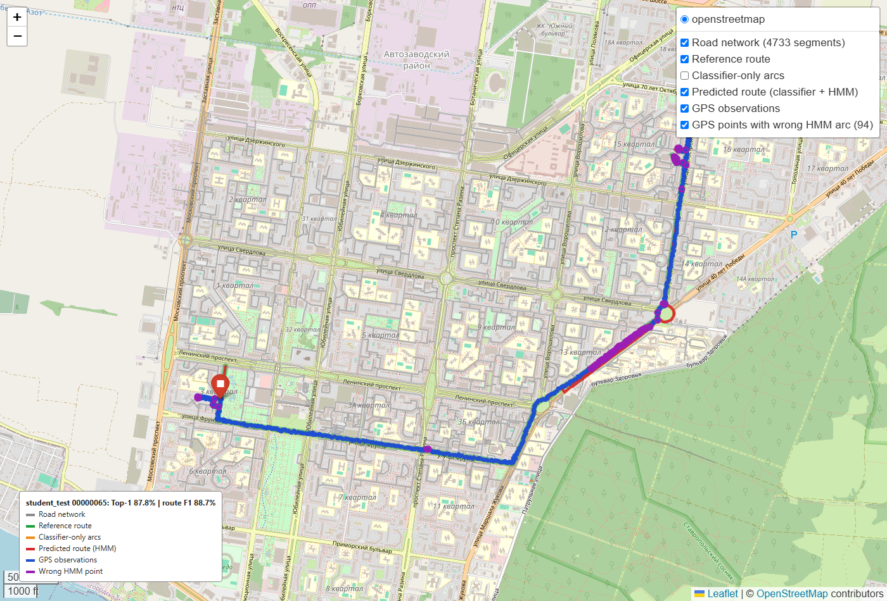
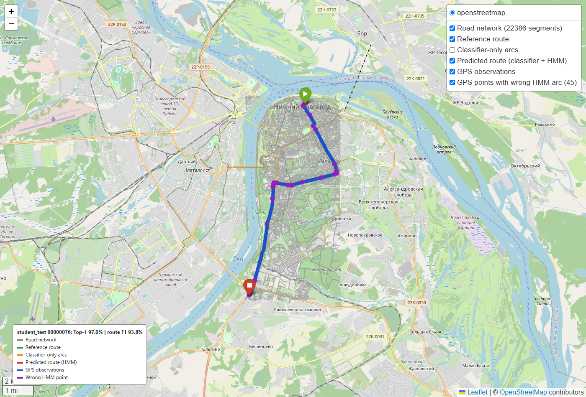
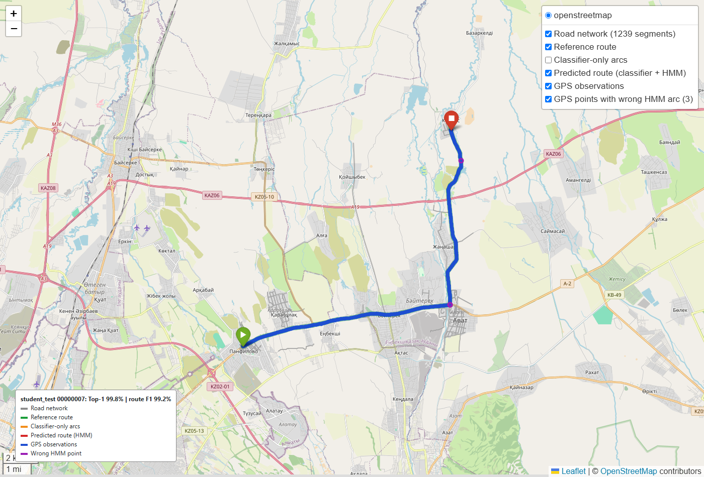
On the best trip (00000007, Top-1 99.8 %) the HMM route coincides with the reference and only 3 GPS points are assigned to a different arc. On the median trip (00000076, 97.0 %) the 45 wrong points cluster at the turns and junctions of the route, where the vehicle passes from one arc to the next and the derived label itself is least certain. On the worst trip (00000065, 87.8 %) the wrong points form one continuous run along a divided road: the predicted route follows the parallel carriageway for that stretch - the failure mode discussed in Section 5. Switching on the orange classifier-only layer in the HTML maps shows its fragmented, disconnected arcs, which the HMM replaces by a single connected route.
Laptop 1 runs the FastAPI service (api/main.py, uvicorn on 0.0.0.0:8000). At start-up it loads the exported artifacts (artifacts/model.joblib, feature_cols.json, candidate_params.json, hmm_params.json, model_card.json) and lists the trips in PATHSNAP_TRIPS_DIR (default data/eval). For POST /predict it runs the full pipeline (src/pathsnap/pipeline.py): load and clean the track, project, generate candidates, build features, classify, decode with HMM/Viterbi and stitch the route. Only afterwards is the .route file read, server-side, to compute metrics; the response contains only aggregate metrics, never the reference route or labels. Every request is logged to the console and logs/api.log (client IP, trip, number of points and candidates, per-stage timings, metrics). Laptop 2 runs the Streamlit UI (ui/app.py), which only talks to the API: it shows the trips returned by /trips, sends the selected trip id, and draws the GPS points and predicted route on a Folium map with layer control and legend, plus the metrics and timings. Both laptops must be on the same network; the API port (8000) must be allowed through the Windows firewall on Laptop 1.
| Method | Endpoint | Returns |
|---|---|---|
| GET | /health | status, model name, candidate and HMM parameters, number of trips |
| GET | /trips | ids and GPS-point counts of the trips in PATHSNAP_TRIPS_DIR (no ground truth) |
| POST | /predict {trip_id} | full pipeline -> GPS points, snapped points, per-point arc ids, route polylines, server-side metrics, per-stage timings |
End-to-end verification (scripts/06_export_artifacts.py): the exported artifacts were run through exactly the API code path on all 10 student-test trips; Top-1 matches the offline evaluation for every trip:
| trip_id | n_points | pipeline_top1 | offline_top1 | route_f1 | plausible_continuity | total_s | match |
|---|---|---|---|---|---|---|---|
| 00000000 | 2503 | 0.9728 | 0.9728 | 0.9465 | 0.9890 | 0.44 | True |
| 00000007 | 1354 | 0.9978 | 0.9978 | 0.9918 | 1.0000 | 0.23 | True |
| 00000009 | 1049 | 0.9031 | 0.9031 | 0.9226 | 0.9896 | 0.49 | True |
| 00000040 | 2995 | 0.9823 | 0.9823 | 0.9968 | 1.0000 | 0.56 | True |
| 00000052 | 262 | 0.9885 | 0.9885 | 0.9894 | 1.0000 | 0.10 | True |
| 00000056 | 3958 | 0.9631 | 0.9631 | 0.9594 | 0.9950 | 1.34 | True |
| 00000065 | 768 | 0.8776 | 0.8776 | 0.8869 | 0.9640 | 0.27 | True |
| 00000076 | 1486 | 0.9697 | 0.9697 | 0.9379 | 0.9971 | 0.92 | True |
| 00000077 | 3911 | 0.9067 | 0.9067 | 0.9453 | 0.9934 | 1.09 | True |
| 00000091 | 874 | 0.9371 | 0.9371 | 0.9935 | 1.0000 | 0.31 | True |
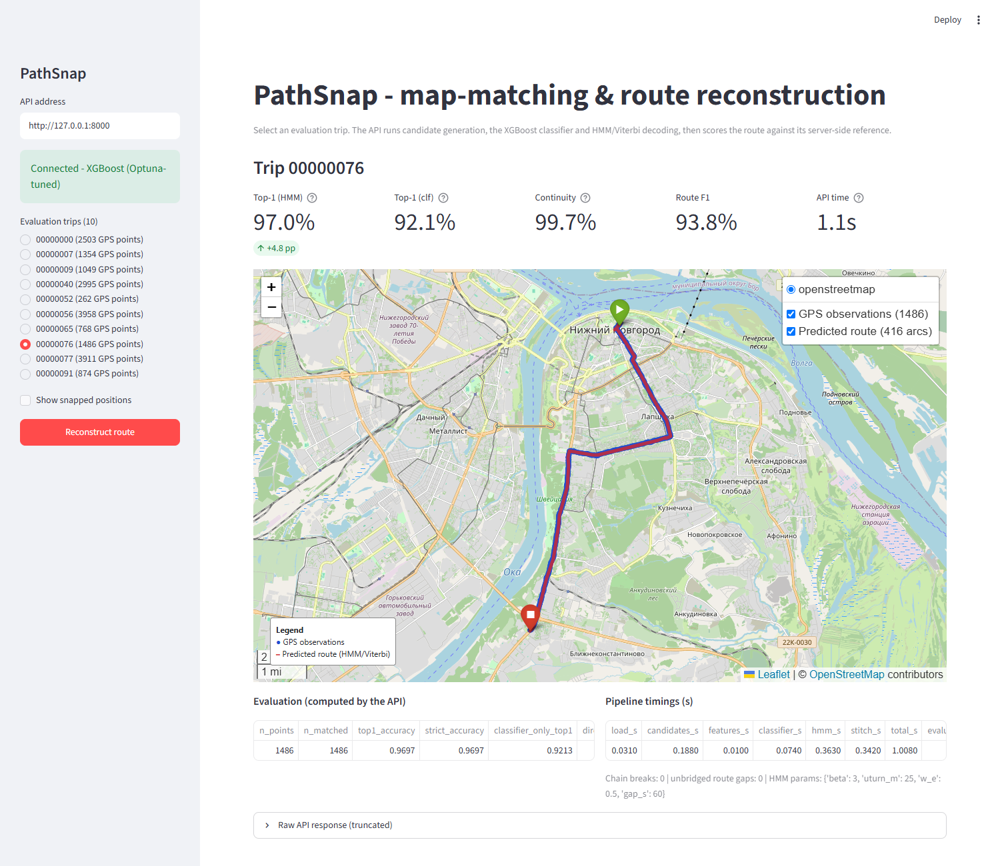
API log excerpt - local two-process rehearsal (API with PATHSNAP_TRIPS_DIR=data/student_test, requests over HTTP for all 10 trips); full log in results/logs/api_rehearsal_student_test.log:
2026-11-18 14:31:48 | INFO | ======================================================================
2026-11-18 14:31:48 | INFO | PathSnap API started
2026-11-18 14:31:48 | INFO | model : XGBoost (Optuna-tuned) (artifacts: D:\EBOOKS\SEM 5\ML Lab\Hack\PT-044-ML-Hack\artifacts)
2026-11-18 14:31:48 | INFO | candidates : radius=50.0 m, K=8
2026-11-18 14:31:48 | INFO | hmm params : {'beta': 3, 'uturn_m': 25, 'w_e': 0.5, 'gap_s': 60}
2026-11-18 14:31:48 | INFO | trips dir : D:\EBOOKS\SEM 5\ML Lab\Hack\PT-044-ML-Hack\data\student_test (10 trips: 00000000, 00000007, 00000009, 00000040, 00000052, 00000056, 00000065, 00000076, 00000077, 00000091)
2026-11-18 14:31:48 | INFO | ======================================================================
2026-11-18 14:31:49 | INFO | 127.0.0.1 GET /health -> 200 (6 ms)
2026-11-18 14:32:53 | INFO | 127.0.0.1 GET /health -> 200 (2 ms)
...
2026-11-18 14:33:19 | INFO | metrics: Top-1=0.9697 classifier-only Top-1=0.9213 strict acc=0.9697 continuity=0.9971 route F1=0.9379
2026-11-18 14:33:19 | INFO | 127.0.0.1 POST /predict -> 200 (1125 ms)
2026-11-18 14:33:19 | INFO | PREDICT request from 127.0.0.1: trip 00000077
2026-11-18 14:33:20 | INFO | trip 00000077: 3911 GPS points, 28140 candidates, 353 route arcs, chain breaks=0, unbridged gaps=0
2026-11-18 14:33:20 | INFO | timings (s): load_s=0.008, candidates_s=0.08, features_s=0.03, classifier_s=0.238, hmm_s=0.63, stitch_s=0.069, total_s=1.056, evaluation_s=0.180
2026-11-18 14:33:20 | INFO | metrics: Top-1=0.9067 classifier-only Top-1=0.7377 strict acc=0.9067 continuity=0.9934 route F1=0.9453
2026-11-18 14:33:20 | INFO | 127.0.0.1 POST /predict -> 200 (1309 ms)
2026-11-18 14:33:20 | INFO | PREDICT request from 127.0.0.1: trip 00000091
2026-11-18 14:33:21 | INFO | trip 00000091: 874 GPS points, 6336 candidates, 233 route arcs, chain breaks=0, unbridged gaps=0
2026-11-18 14:33:21 | INFO | timings (s): load_s=0.01, candidates_s=0.028, features_s=0.006, classifier_s=0.084, hmm_s=0.15, stitch_s=0.038, total_s=0.315, evaluation_s=0.037
2026-11-18 14:33:21 | INFO | metrics: Top-1=0.9371 classifier-only Top-1=0.9096 strict acc=0.9371 continuity=1.0000 route F1=0.9935
2026-11-18 14:33:21 | INFO | 127.0.0.1 POST /predict -> 200 (373 ms)
[Evaluation-day screenshots: save them as report/img/eval_ui.png and report/img/eval_api_console.png and re-run scripts/08_build_report.py.]
The 10 evaluator trips were received after development was finished. The deployed artifacts were frozen before that (artifacts/model.joblib written 14:30, evaluator data received 14:59, model.joblib SHA-256 prefix a1487ebe9adef27b) and nothing - model, features, candidate or decoder parameters - was changed afterwards; the evaluator trips were only passed through the API exactly as in the evaluation procedure (PATHSNAP_TRIPS_DIR=data/eval, requests over HTTP). Full log: results/logs/api_eval_run_local.log; per-trip results: results/eval/eval_results.csv.
| trip_id | n_points | n_matched | top1_classifier_only | top1_hmm | strict_accuracy | plausible_continuity | route_precision | route_recall | route_f1 | chain_breaks | unbridged_gaps | api_total_s |
|---|---|---|---|---|---|---|---|---|---|---|---|---|
| 00000015 | 6854 | 6814 | 0.6548 | 0.9527 | 0.9472 | 0.9889 | 0.7614 | 0.9853 | 0.8590 | 0 | 0 | 5.65 |
| 00000017 | 1346 | 1346 | 0.9183 | 0.9198 | 0.9198 | 0.9967 | 0.8807 | 0.9902 | 0.9323 | 0 | 0 | 4.95 |
| 00000023 | 458 | 458 | 0.9389 | 0.9541 | 0.9541 | 1.0000 | 0.6591 | 0.9831 | 0.7891 | 0 | 0 | 0.46 |
| 00000030 | 654 | 654 | 0.8333 | 0.8532 | 0.8532 | 1.0000 | 0.9041 | 0.9792 | 0.9402 | 0 | 0 | 1.38 |
| 00000049 | 2642 | 2642 | 0.9921 | 0.9951 | 0.9951 | 0.9975 | 0.9624 | 0.9976 | 0.9796 | 0 | 0 | 2.41 |
| 00000059 | 1031 | 1031 | 0.9496 | 0.9612 | 0.9612 | 0.9972 | 0.9229 | 1.0000 | 0.9599 | 0 | 0 | 2.00 |
| 00000067 | 916 | 916 | 0.9596 | 0.9825 | 0.9825 | 0.9863 | 1.0000 | 1.0000 | 1.0000 | 0 | 0 | 0.71 |
| 00000073 | 1144 | 1144 | 0.9825 | 0.9808 | 0.9808 | 0.9957 | 0.9834 | 1.0000 | 0.9916 | 3 | 0 | 1.25 |
| 00000087 | 1399 | 1399 | 0.9578 | 0.9907 | 0.9907 | 1.0000 | 1.0000 | 0.9978 | 0.9989 | 0 | 0 | 2.15 |
| 00000094 | 3230 | 3230 | 0.9328 | 0.9579 | 0.9579 | 0.9965 | 0.9028 | 1.0000 | 0.9489 | 2 | 0 | 3.66 |
| POOLED (point-weighted) | 19674 | 19634 | 0.8469 | 0.9599 | 0.9580 | N/A | N/A | N/A | N/A | N/A | N/A | N/A |
| MEAN over trips | 1967 | 1963 | 0.9120 | 0.9548 | 0.9542 | 0.9959 | 0.8977 | 0.9933 | 0.9400 | 0 | 0 | 2.46 |
Pooled over all 19634 matched GPS points the deployed system reaches Top-1 0.9599 (classifier only 0.8469), with mean plausible continuity 0.9959, mean route F1 0.9400, no unbridged route gaps and 2.5 s mean API time per trip. This is in line with the student-test estimate (0.9513), confirming that the model selection and tuning decisions, made without the evaluator data, generalise. The largest HMM gain is on trip 00000015 (Top-1 0.655 -> 0.953): 78 % of the classifier's 2352 wrong points on this trip (1834) were the reverse twin of the true arc, i.e. the right road in the wrong direction; the network transitions restore the consistent direction and leave 322 wrong points. The lowest route F1 (trip 00000023, 0.789) comes from route precision (0.659; recall 0.983) rather than point accuracy (Top-1 0.954): on this short trip a few extra arcs in the predicted route that are not in the reference route weigh heavily.
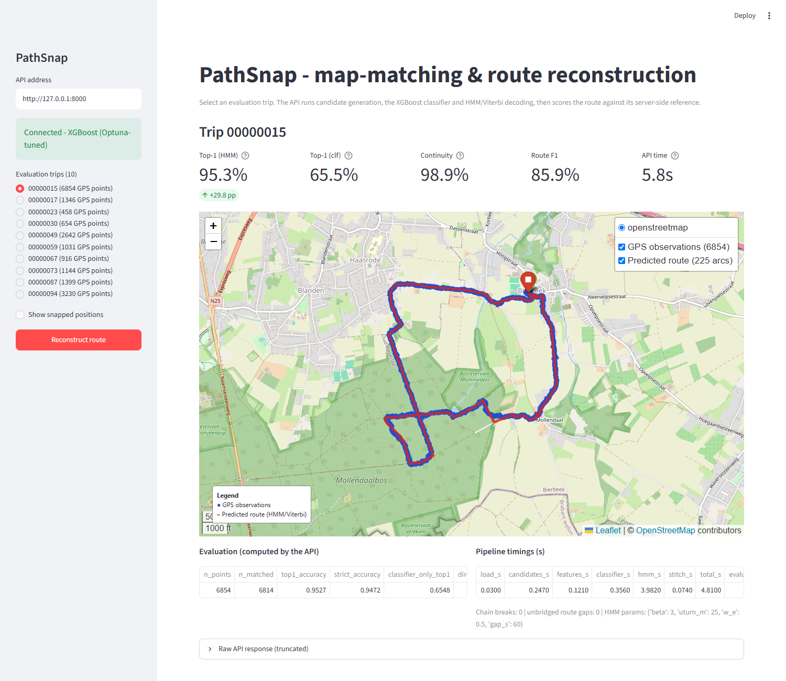
PathSnap reconstructs vehicle routes with an end-to-end pipeline that runs in about 1 s per student-test trip: candidate arcs within 50 m (miss rate 0.22 % on student-test), an Optuna-tuned XGBoost classifier on 33 location-independent features (student-test Top-1 0.894 alone) and HMM/Viterbi decoding using road-network distances, which raises Top-1 to 0.951, plausible continuity to 0.99 and route F1 to 0.96. The comparison of eight models showed that gradient-boosted trees capture the interactions between distance, direction of travel and neighbouring-point context best, that the direction of travel is essential on two-way roads, and that sequential decoding contributes more than hyperparameter tuning. Limitations. (1) Per-point labels are derived from the reference route by our alignment and inherit its errors; points at junctions are inherently ambiguous and trips whose reference route covers only part of the drive were partly excluded. (2) Arcs are straight segments between nodes; curved roads without intermediate nodes have larger apparent GPS errors. (3) Parallel one-way carriageways a few metres apart remain the main failure mode, for both the classifier and the HMM. (4) Bayesian optimisation used 30 trials and improved CV Top-1 only marginally; the tuned model is slower and slightly less calibrated as a stand-alone classifier. (5) The student-test set has only 10 trips, so differences below about 1 pp between models are not significant. Possible improvements: a carriageway-aware feature (side of the road relative to the direction of travel), probability calibration before decoding, and learning the transition model from data.
pip install -r requirements.txt python scripts/01_eda.py python scripts/02a_candidate_grid.py python scripts/02_build_dataset.py python scripts/03_train_compare.py python scripts/03b_mlp_loss_curve.py python scripts/04_bayes_opt.py --trials 30 python scripts/05_hmm_eval.py python scripts/05_hmm_eval.py --model xgboost --out hmm_untuned python scripts/06_export_artifacts.py python scripts/07_make_maps.py python scripts/08_build_report.py python -m pytest -q tests
An AI coding assistant (Claude) was used to help write and debug parts of the code and to draft parts of this report. All experiments were executed by the team with the scripts in the repository, every number, table and figure in this report is generated from those runs (results/ directory), and the team reviewed the implementation and results.